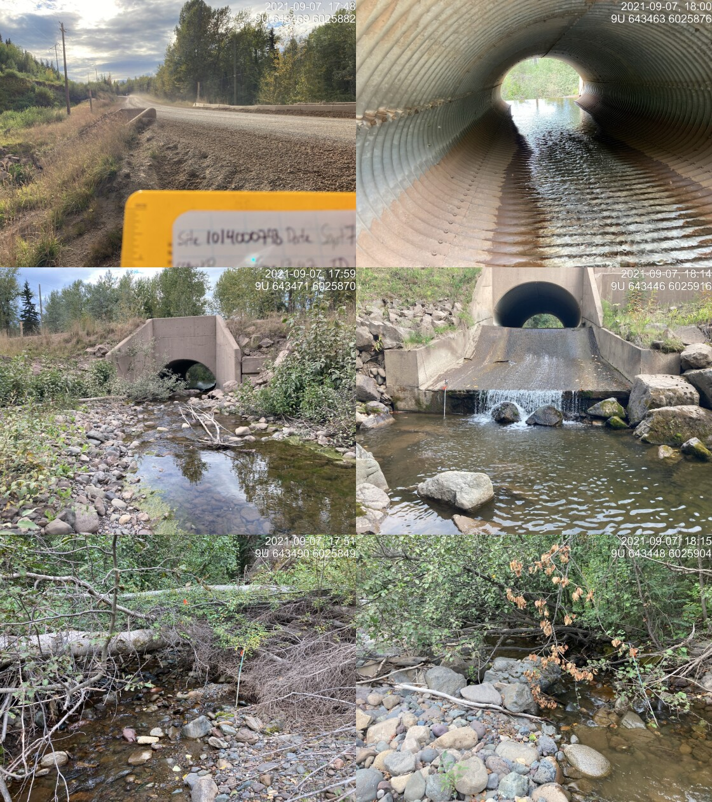
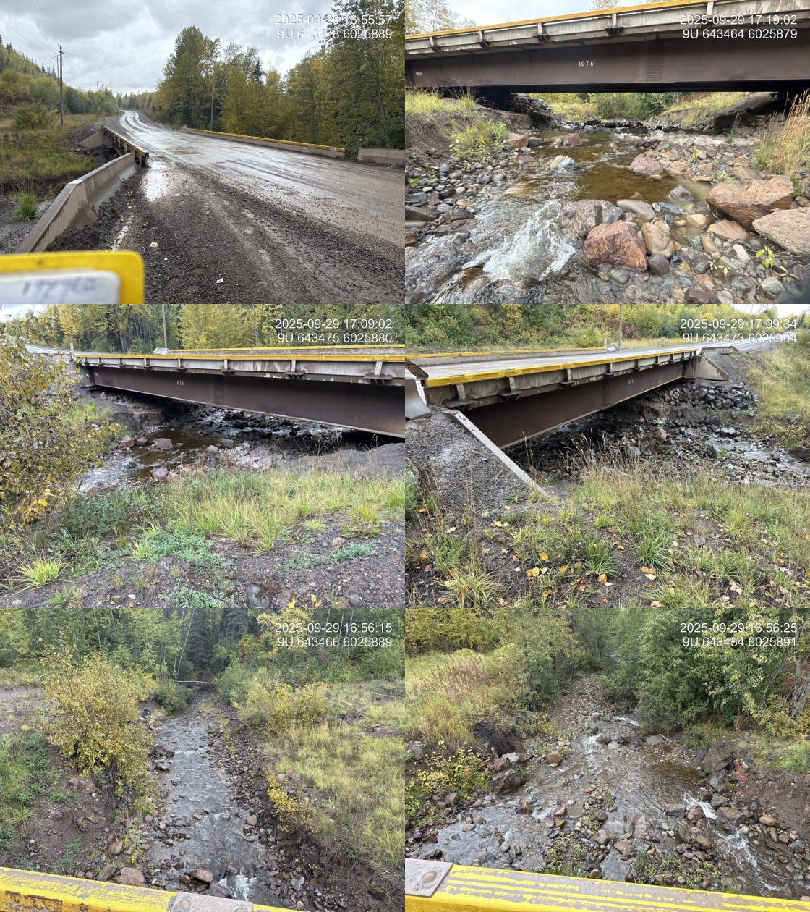
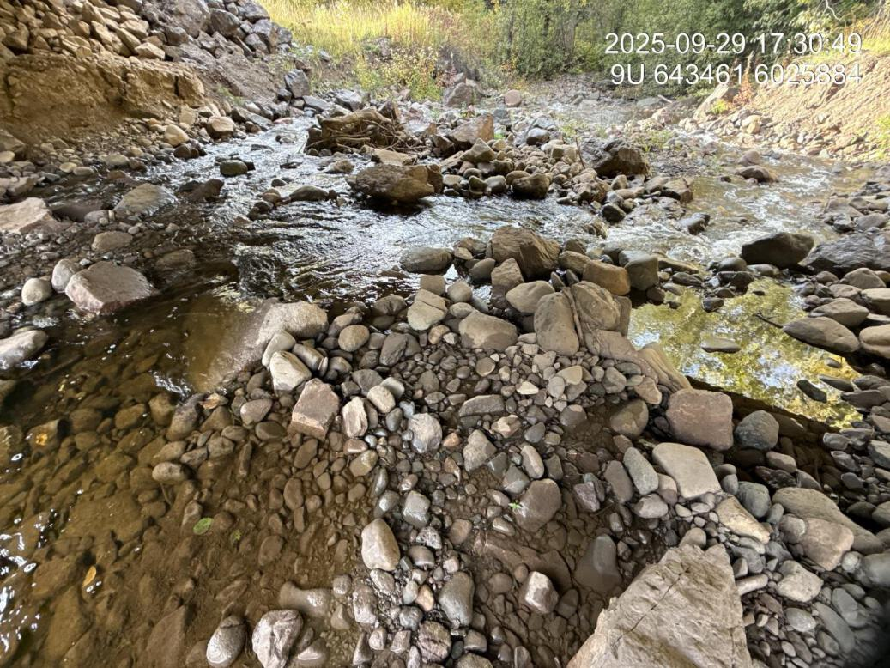

Peacock Creek - 197962 - Monitoring Appendix
PSCIS crossing 197962 on Peacock Creek is located on the Morice Forest Service Road within the Morice River watershed group. The culvert at this crossing was replaced with a bridge in 2021, and the site was revisited in 2025 under the effectiveness monitoring program.
Crossing Characteristics
Before replacement, the structure was a corrugated metal culvert with a concrete headwall, ranked a barrier to upstream migration under the provincial protocol (MoE 2011). The assessment recorded a partial inlet drop of varying height caused by large woody debris and boulders. Photographs taken during the September 2021 assessment show the outlet perched above a plunge pool, with the drop and the pool visible below the headwall (Figure 5.1).
The replacement structure is an open-span bridge. Photographs from the 2025 monitoring visit show an unconstricted channel through the crossing, with the bed continuous through the opening and no residual outlet drop (Figure 5.2).
my_caption <- paste0("Culvert on Peacock Creek at PSCIS crossing ", my_site_mon,
" on the Morice FSR, photographed on 2021-09-07 before replacement. ",
"The outlet is perched above a plunge pool.")
knitr::include_graphics("data/photos/197962/before/crossing_all.JPG")
Figure 5.1: Culvert on Peacock Creek at PSCIS crossing 197962 on the Morice FSR, photographed on 2021-09-07 before replacement. The outlet is perched above a plunge pool.
my_caption <- paste0("Bridge on Peacock Creek at PSCIS crossing ", my_site_mon,
" on the Morice FSR, photographed on 2025-09-29 following replacement.")
knitr::include_graphics("data/photos/197962/crossing_all.JPG")
Figure 5.2: Bridge on Peacock Creek at PSCIS crossing 197962 on the Morice FSR, photographed on 2025-09-29 following replacement.
my_caption <- paste0("Substrate condition through the crossing at PSCIS crossing ", my_site_mon,
", recorded during the ", params$project_year, " effectiveness monitoring visit.")
knitr::include_graphics("data/photos/197962/20250929_173127_NA_substrate.JPG")
Figure 5.3: Substrate condition through the crossing at PSCIS crossing 197962, recorded during the 2025 effectiveness monitoring visit.
Habitat and Fish Presence
Habitat confirmation assessments were completed at this site in September 2021, before the culvert was replaced. Both the reach upstream and the reach downstream of the crossing were rated high habitat value, with 750 m surveyed upstream and 600 m downstream. The upstream reach was described as complex habitat with undercut banks, large and small woody debris and pools; the downstream reach as carrying consistent undercut banks with woody debris and overhanging vegetation providing cover. Approximately 4.8 km of upstream habitat length was estimated, and the site was ranked a high priority for remediation.
The site was electrofished on 2021-09-17 at three closed-site multi-pass locations upstream of the crossing and three downstream, capturing 96 fish across four species (Table 5.9). Dolly Varden and rainbow trout were caught on both sides of the crossing. Coho salmon and cutthroat trout were caught only downstream. Fork lengths ranged from 48 to 148 mm across all species, with coho between 63 and 85 mm.
tibble::tribble(
~Species, ~Downstream, ~Upstream, ~Total,
"Coho Salmon", 10L, 0L, 10L,
"Cutthroat Trout", 1L, 0L, 1L,
"Dolly Varden", 16L, 40L, 56L,
"Rainbow Trout", 26L, 3L, 29L,
"Total", 53L, 43L, 96L
) |>
fpr::fpr_kable(
caption_text = paste0("Fish captured by multi-pass closed-site electrofishing at PSCIS crossing ",
my_site_mon, " on 2021-09-17, before the culvert was replaced. ",
"Three sites upstream and three downstream."),
scroll = FALSE
)| Species | Downstream | Upstream | Total |
|---|---|---|---|
| Coho Salmon | 10 | 0 | 10 |
| Cutthroat Trout | 1 | 0 | 1 |
| Dolly Varden | 16 | 40 | 56 |
| Rainbow Trout | 26 | 3 | 29 |
| Total | 53 | 43 | 96 |
Replacement of the culvert began three days later, on 2021-09-20, so the entire 2021 record — assessment, habitat confirmation and fish sampling — describes the site in its pre-remediation condition.
In 2025, environmental DNA was collected both upstream and downstream of the crossing. Downstream, rainbow trout and coho were detected. Upstream, bull trout and coho were detected. Chinook and sockeye were not detected at either location (Table 5.10).
edna_results_197962 |>
fpr::fpr_kable(
caption_text = paste0("Environmental DNA detection results at PSCIS crossing ", my_site_mon,
", upstream and downstream of the crossing."),
scroll = FALSE
)| Site ID | UNBC ID | Detected | Sub-threshold | Not detected |
|---|---|---|---|---|
| 197962_ds_ed | S60678 | COHO(8), RAIN(124) | — | CHIN(0), SOCK(0) |
| 197962_us_ed | S60880 | BULT(84), COHO(6) | — | CHIN(0), SOCK(0) |
Discussion
The site carries an uncommonly strong record. The pre-remediation habitat confirmation rated both reaches high value and estimated 4.8 km of habitat upstream, multi-pass electrofishing established what was present on each side of the culvert before it was replaced, and the 2025 environmental DNA re-establishes species presence four years after replacement.
Coho and cutthroat trout were captured only downstream of the culvert in 2021. In 2025, coho was detected on both sides of the bridge.
Recommendations for continued monitoring at this site:
Resample for environmental DNA at both locations across multiple points in the season. The 2025 samples were collected on one day at the end of September.
Assay the same species panel at both locations so the two are directly comparable. In 2025 the upstream and downstream samples were assayed for different sets of targets.
Repeat the electrofishing conducted in 2021 at the same closed-site locations. Pre-remediation multi-pass data exist for three sites upstream and three downstream, which is an uncommonly strong baseline and the most direct available measure of whether the replacement changed fish use rather than only passage condition.
Continue photographic monitoring of substrate, cover, bank stability and revegetation through the crossing, so channel recovery following construction can be tracked over time.